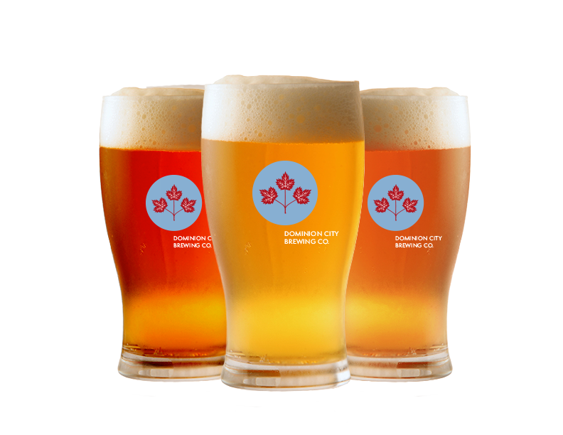

Dominion City Brewing Co. produces:
- Three full-flavoured, always-available beers.
- Four rotating beers that celebrate the best of the four seasons here in the Ottawa Valley.
- An exciting selection of boundary-pushing specialty beers, including a limited-edition sour beer and session ale program.
We brew our beer using heirloom organic specialty grains grown and milled right here in the Ottawa Valley. It’s our way of producing a unique product that celebrates the best of our region.

Dominion City Brewing Co. will open it's doors in 2014. At that time, you will be able to experience our beer in ways both familiar and new. We're excited to partner with regional pubs and restaurants and you'll be able to pick up a growler through our brewery retail store. Excitingly, Dominion City Brewing Co. will also deliver beer to your door—consider us the craft beer equivalent of the milkman.